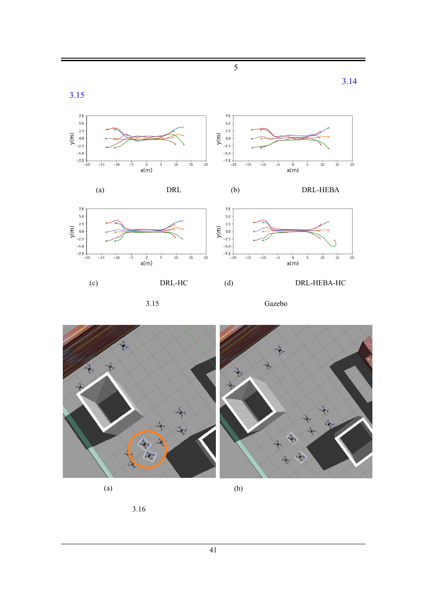

Collision Detection and Avoidance of UAV Swarms Based on Distributed Deep Reinforcement Learning · 国防科技大学 硕士学位论文（2021 年 12 月）
| 作者 | 王冠政（Wang Guanzheng） |
| 导师 | 王祥科 教授（Supervisor）；刘志宏 助理教授（Associate Supervisor） |
| 单位/学位 | 国防科技大学研究生院 · 控制科学与工程 · 工学硕士 |
| 时间/篇幅 | 2021 年 12 月 · 正文 5 章 / 123 页 |
| 一句话 | 以无人机之间的通信条件为主线，把集群感知规避拆成三种情形——完全分布式（无通信）、人类经验加速、邻居通信 + 注意力机制——全部用 DRL 在仿真中训练、在 PX4 SITL + Gazebo 与真机多机飞行中验证，实现"训练时算完、机载只做前向推理"的实时避碰。 |
| # | 方法 | 解决的问题 | 关键机制 |
|---|---|---|---|
| ① | 无通信的分布式感知规避 | 复杂电磁环境下机间通信不可靠；集中式方法依赖高带宽、低时延、高性能中心节点 | POMDP 建模 + 分布式 DRL；每机仅用机载传感器 + 机载计算平台；完全分布式架构 |
| ② | 融合人类经验的训练加速（HEBA） | DRL 采样效率低、训练时间长 | 把人类经验抽象成动作顾问（Human Experience Based Adviser）在训练中给出建议动作；显著提升收敛速度 |
| ③ | 邻居通信 + 注意力机制 | 机载传感器存在感知盲区，可靠性不足 | 用邻居通信扩展观测空间；进一步用两级注意力选择通信目标并提取信息，端到端更新策略参数 |
从论文脉络看，这三点构成"能力—效率—可靠性"三角：①保证可用（不依赖通信），②保证可训（样本效率），③保证可靠（补盲 + 选通信对象）。
flowchart TB
subgraph SIM["仿真闭环"]
GZ["Gazebo
动力学 · 场景渲染 · 传感器"]
PX4["PX4 Firmware
底层姿态/位置控制（SITL）"]
MV["MAVROS
MAVLink ↔ ROS 桥"]
NODE["控制节点
DRL 策略（训练或推理）"]
LID["激光雷达数据 topic
(Hokuyo UST-05LX 2D LiDAR)"]
end
subgraph PAR["并行训练"]
MPI["mpi4py
多进程 / 多机实例"]
STG["Stage
轻量 2.5D 训练场景"]
end
GZ -->|"MAVLink"| MV
MV -->|"topic / service"| NODE
NODE -->|"MAVLink"| MV
MV -->|"控制指令"| PX4
PX4 -->|"电机/姿态"| GZ
GZ --> LID --> NODE
NODE -.->|"训练时"| MPI
STG -.->|"训练时替代 Gazebo"| MPI
classDef sim fill:#fef7ed,stroke:#f59e0b,color:#92400e
classDef par fill:#e8f0fe,stroke:#3b82f6,color:#1d4ed8
class GZ,PX4,MV,NODE,LID sim
class MPI,STG par
读法：Gazebo 提供世界与传感器，PX4 提供飞控，MAVROS 是翻译层，DRL 节点只是一个 ROS 节点——这就是 XTDrone 那一套架构的雏形（作者团队后来开源了 XTDrone，6202 直接复用）。训练时用 Stage 替代 Gazebo，并靠 mpi4py 起多进程并行采样。
flowchart LR
S["机载 2D LiDAR
Hokuyo UST-05LX"] --> O["观测处理
（距离数据 → 状态）"]
C["邻居通信
（工作③）"] -.-> O
O --> P["DRL 策略网络
共享参数 · 每机独立推理"]
P --> A["速度/角速度指令"]
A --> F["PX4 / 飞控"]
F --> E["机体运动"]
E --> S
E --> R["奖励：接近 + 避碰 + 平滑"]
R -.->|"仅训练时"| P
H["人类经验顾问 HEBA
（工作②）"] -.->|"训练时给出建议动作"| P
classDef s fill:#fef7ed,stroke:#f59e0b,color:#92400e
classDef d fill:#f5f3ff,stroke:#8b5cf6,color:#6d28d9
classDef e fill:#ecfdf5,stroke:#10b981,color:#047857
class S,C,O s
class P,A,H d
class F,E,R e
研究对象是小型旋翼无人机集群，研究方法是深度强化学习，研究问题是不同通信条件下的实时感知规避（collision detection and avoidance）。任务可形式化为 POMDP（摘要原文用词），每个 UAV 是一个同构智能体，策略在集群间共享。
| 要素 | 内容 |
|---|---|
| 感知 | 机载 2D LiDAR（目录图注出现 Hokuyo UST-05LX，为 270° 二维激光测距仪） |
| 通信 | 三种设定：无通信 / 邻居通信 / 注意力选择通信对象 |
| 执行 | 分布式，无中心节点；每机独立前向推理（论文强调"机载只做前向推导，大幅降低计算量"） |
| 对比基线 | 传统实时规划算法；目录中出现 Dynamic A*（D*）多处，应为对比方法之一 |
| 验证 | PX4 SITL 仿真 + 多机真机飞行（摘要："Simulation experiments based on PX4 software in the loop (SITL) and real flights of multi-UAV have verified the effectiveness"） |
| 设定 | 得到什么 | 牺牲什么 |
|---|---|---|
| 无通信（工作①） | 最强鲁棒性：电磁环境再差也能飞 | 感知受限 → 机间避碰只能靠"看见"，盲区里的队友无法规避 |
| 邻居通信（工作③前半） | 补盲，机间避碰可靠性显著提升，训练更快更稳 | 依赖链路可用性；带宽随集群规模线性增长 |
| 注意力选择通信（工作③后半） | 只和"该通信的"对象交换信息，缓解带宽与拓扑压力 | 需要额外的选择网络与训练难度；选错目标 = 漏掉关键邻居 |
正文中文字层缺失，以下按摘要给出的方法骨架重建，公式为该方法的标准形式（标注"标准形式"，非原文编号）。
这篇硕士论文是他全部仿真器经验的"原点"：PX4 SITL + Gazebo + ROS/MAVROS 这条栈此后被反复复用（6202 的验证、6205 的对照、XTDrone 的开源）。
| 原因 | 具体 |
|---|---|
| 飞控在环（SITL） | PX4 固件真正在跑：姿态环、位置环、混控、电机模型都是真实代码。策略输出的是"给飞控的指令"，与真机完全同构——这是 sim-to-real 最关键的一层，也是后续能直接上真机的前提。 |
| 生态与可复现 | Gazebo + ROS + MAVROS 是 2021 年多机仿真的事实标准；传感器插件、世界文件、多机 spawn 都有现成方案，不必自研。 |
| 真机同栈 | 真机飞行仍走 ROS/MAVROS，仿真与真机只差"Gazebo 换成机体"。这解释了为什么这篇论文敢做真机多机实验，而后来的期刊论文反而停在 SITL。 |
| 并行靠进程 | mpi4py 起多个"Gazebo+PX4+策略"实例。SITL 时钟实时，所以并行度就是吞吐上限——这是这条路线的天花板。 |
| 问题 | 说明 | 影响 |
|---|---|---|
| ① 两套仿真器 = 两套物理 | Stage（训练）是运动学质点 + 2D 射线；Gazebo（验证）是带姿态动力学的真实旋翼 | ★★★★ 训练-验证的物理落差被混入"泛化性能"，无法分离 |
| ② Gazebo 的"高保真"是相对的 | 缺少气动干扰、风场、地面效应；接触模型粗糙；无传感器噪声标定 | ★★★ 真机上"看起来一样"的场景，气动扰动可能完全不同 |
| ③ SITL 吞吐天花板 | 每个实例要跑完整 PX4 固件 + Gazebo 世界；并行只能靠 mpi4py 多进程 | ★★★ 无法扩展到万级并行；这也是他后来转向"纯动力学仿真（JSBSim）+ 可关渲染"的动机之一 |
| ④ 可复现性依赖环境 | PX4 版本、Gazebo 版本、ROS 发行版、MAVROS 版本强耦合；2021 年的组合在今天已难复现 | ★★ 这是 ROS/Gazebo 生态的普遍问题（Gazebo Classic 已于 2025-01 EOL） |
| ⑤ 文本层缺失 | 本文 PDF 的中文正文不可提取（字体未嵌入） | ★★ 影响本笔记的细节深度；建议向作者索取可复制版本 |

| 年份 | 工作 | 仿真器 |
|---|---|---|
| 2021 | 本篇（硕士论文） | PX4 SITL + Gazebo + ROS/MAVROS（+ Stage 训练）· 含真机 |
| 2022 | CICAI 事件相机 | AirSim + Unreal Engine 4（event-sim 插件） |
| 2025 | AST 仿射编队 | STAGE（训练与实验同一套） |
| 2025 | AIHCIR 空中拦截 | 未披露（自建旋翼 6-DOF） |
| 2026 | US 统一数据表示 | Stage（训练）+ PX4 SITL/Gazebo（验证） |
| 2026 | JAI 时间最优 | JSBSim 6-DOF + Unreal（渲染可关） |